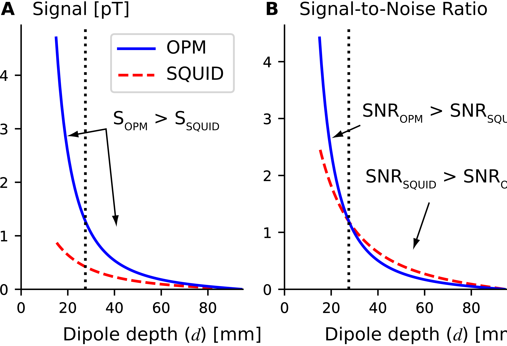
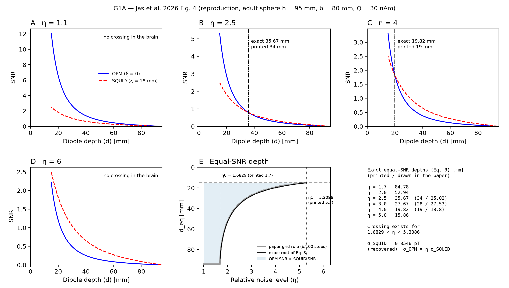
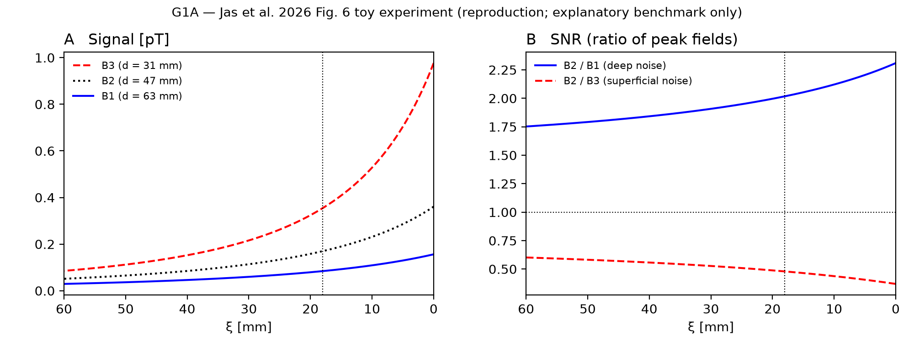
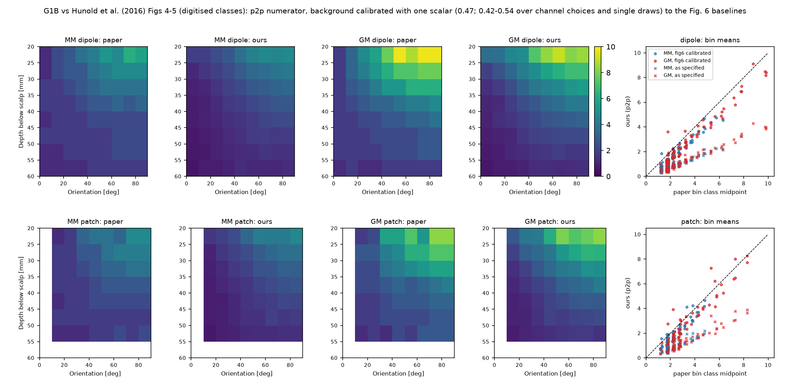
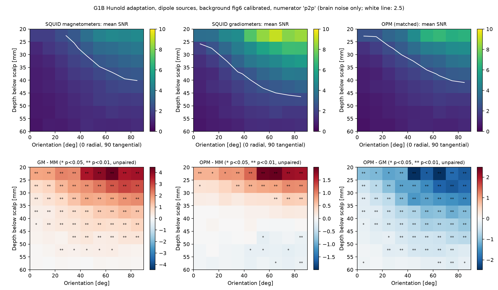
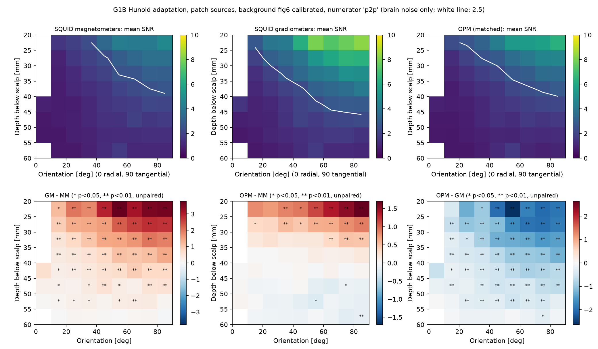
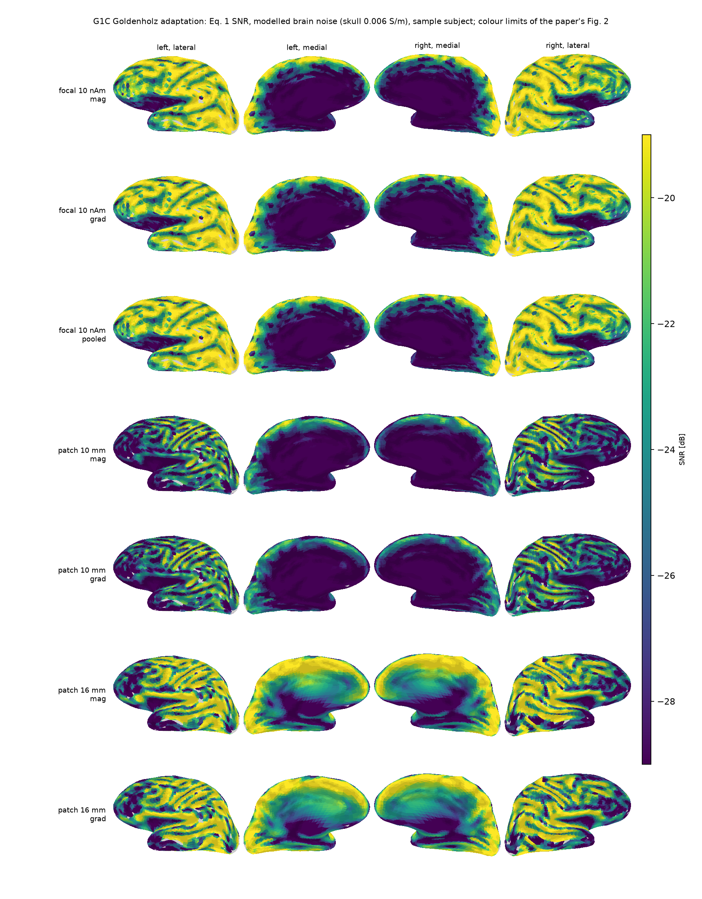
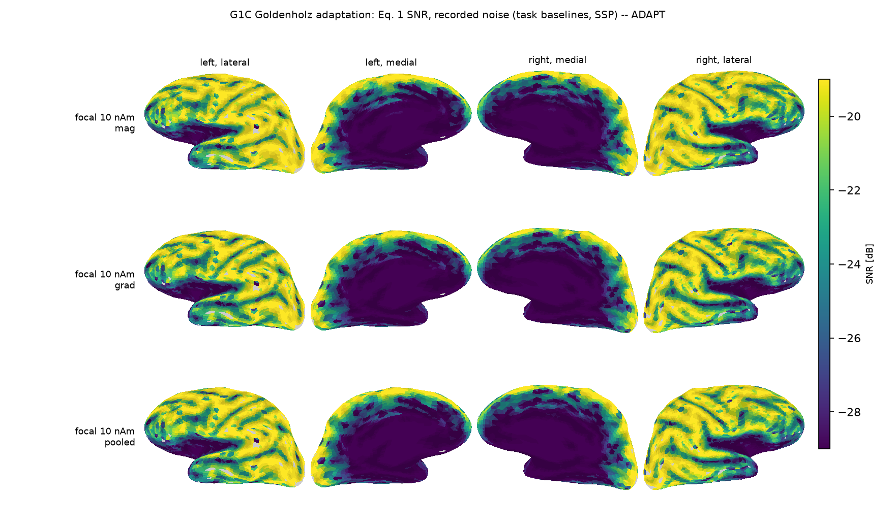
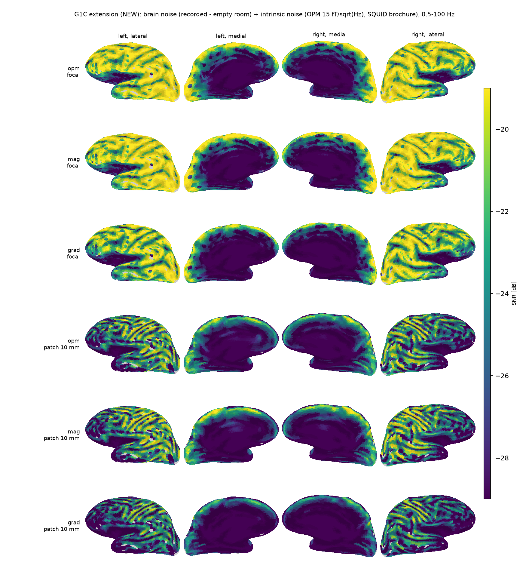

S2. Adult reference benchmarks
REPRO G1A reproduces the analytical sphere benchmark of Jas et al. (2026). ADAPT G1B and G1C adapt Hunold et al. (2016) and Goldenholz et al. (2009) to the MNE sample subject: the original anatomy, recordings and some details are unavailable. The OPM columns are new. Methods: sections 1, 6 and 7 of the methods.
G1A: Jas et al. 2026 analytical benchmark

| Item | Printed [mm] | Drawn [mm] | Exact [mm] |
|---|---|---|---|
| Fig. 3 d_eq (eta 3) | 28 | 27.53 | 27.665 |
| Fig. 4B d_eq (eta 2.5) | 34 | 35.02 | 35.671 |
| Fig. 4C d_eq (eta 4) | 19 | 19.80 | 19.816 |
Checks: Eq. 1 agrees with an independent Sarvas-field maximisation to 4.7e-15 and with MNE's sphere model to 5.4e-08; a crossing exists only for 1.6829 < η < 5.3086; the equal-SNR depth does not depend on the absolute noise level.


G1B: Hunold et al. 2016 depth-orientation spike SNR
3,783 dipoles (600 nAm) and 20-mm² patches stratified to the paper's per-bin counts; background of 28,494 random dipoles. Two background levels: as specified in the text, and calibrated with one scalar (0.47) to the paper's Fig. 6 baselines, using our expected baseline over 20 background realizations (other channel choices and single realizations give 0.42-0.54). The paper's maps are never used for calibration.
| Background | Sources | Numerator | Sensor | r | Mean ratio ours/paper | Strong bins | Weak bins | 2.5-threshold agreement |
|---|---|---|---|---|---|---|---|---|
| fig6 calibrated | dipole | p2p | MM | 0.96 | 0.74 | 0.80 | 0.70 | 89 % |
| fig6 calibrated | dipole | p2p | GM | 0.98 | 0.79 | 0.83 | 0.74 | 86 % |
| fig6 calibrated | dipole | noisy p2p | MM | 0.96 | 0.94 | 0.85 | 0.99 | 90 % |
| fig6 calibrated | dipole | noisy p2p | GM | 0.97 | 0.95 | 0.89 | 1.04 | 92 % |
| fig6 calibrated | patch | p2p | MM | 0.93 | 0.79 | 0.86 | 0.74 | 88 % |
| fig6 calibrated | patch | p2p | GM | 0.94 | 0.85 | 0.87 | 0.80 | 79 % |
| fig6 calibrated | patch | noisy p2p | MM | 0.92 | 0.98 | 0.92 | 1.02 | 95 % |
| fig6 calibrated | patch | noisy p2p | GM | 0.94 | 0.99 | 0.94 | 1.08 | 84 % |
| as specified | dipole | p2p | MM | 0.96 | 0.35 | 0.38 | 0.33 | 65 % |
| as specified | dipole | p2p | GM | 0.98 | 0.37 | 0.39 | 0.35 | 58 % |
| as specified | dipole | noisy p2p | MM | 0.94 | 0.68 | 0.49 | 0.78 | 67 % |
| as specified | dipole | noisy p2p | GM | 0.97 | 0.64 | 0.50 | 0.81 | 64 % |
| as specified | patch | p2p | MM | 0.93 | 0.37 | 0.41 | 0.35 | 62 % |
| as specified | patch | p2p | GM | 0.94 | 0.40 | 0.41 | 0.38 | 50 % |
| as specified | patch | noisy p2p | MM | 0.90 | 0.69 | 0.53 | 0.78 | 62 % |
| as specified | patch | noisy p2p | GM | 0.93 | 0.63 | 0.54 | 0.81 | 55 % |



G1C: Goldenholz et al. 2009 cortical SNR maps
Eq. 1 SNR of 10-nAm dipoles at 284,935 usable vertices and of 10/16-mm patches at 7,661 centroids; modelled noise from 1,736 cortical sources calibrated with the paper's rule (s_s = 2.68 nAm on our grid, 1.77 nAm at 4,000 sources; paper 1.6-1.9 nAm). Focal median -22.1 dB (5-95 %: -35.2 to -16.7 dB); 56 % of vertices fall inside the paper's -29 to -19 dB display range.



| Noise | Matched OPM minus | Median Eq. 1 difference | Vertices where OPM is higher |
|---|---|---|---|
| OPM 7 fT/sqrt(Hz) | magnetometers | +0.19 dB | 57 % |
| OPM 7 fT/sqrt(Hz) | gradiometers | +2.34 dB | 99 % |
| OPM 10 fT/sqrt(Hz) | magnetometers | +0.09 dB | 53 % |
| OPM 10 fT/sqrt(Hz) | gradiometers | +2.25 dB | 99 % |
| OPM 15 fT/sqrt(Hz) | magnetometers | -0.13 dB | 44 % |
| OPM 15 fT/sqrt(Hz) | gradiometers | +2.07 dB | 99 % |
| OPM 20 fT/sqrt(Hz) | magnetometers | -0.40 dB | 33 % |
| OPM 20 fT/sqrt(Hz) | gradiometers | +1.83 dB | 98 % |
| OPM 30 fT/sqrt(Hz) | magnetometers | -1.01 dB | 18 % |
| OPM 30 fT/sqrt(Hz) | gradiometers | +1.26 dB | 95 % |
| brain noise only | magnetometers | +0.09 dB | 53 % |
| brain noise only | gradiometers | -0.08 dB | 46 % |